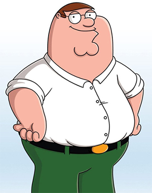

Perter Griffin
About Peter
Peter Löwenbräu Griffin,[2] born Justin Peter Griffin,[A] is a fictional character and the main protagonist of the American animated sitcom Family Guy. He is voiced by the series' creator, Seth MacFarlane, and first appeared on television, along with the rest of the Griffin family, in the 15-minute pilot pitch of Family Guy on December 20, 1998. Peter was created and designed by MacFarlane himself. MacFarlane was asked to pitch a pilot to the Fox Broadcasting Company based on Larry & Steve, a short made by MacFarlane which featured a middle-aged character named Larry and an intellectual dog, Steve. After the pilot was given the green light, the Griffin family appeared in the episode "Death Has a Shadow".
Peter is married to Lois Griffin and is the father of Meg, Chris, and Stewie. He also has a dog named Brian, with whom he is best friends. He has worked at a toy factory and at Quahog's Brewery. Peter's voice was inspired by the security guards that MacFarlane heard at his school. His appearance was a redesign of the protagonist Larry from MacFarlane's previous animated short films The Life of Larry and Larry & Steve. He has appeared in several pieces of Family Guy merchandise, including toys, T-shirts, and video games, and he has made crossover appearances in other shows, including The Simpsons, Drawn Together, American Dad!, and Family Guy's spin-off series The Cleveland Show.
@2021,Made for My HTML/Javascript Class.